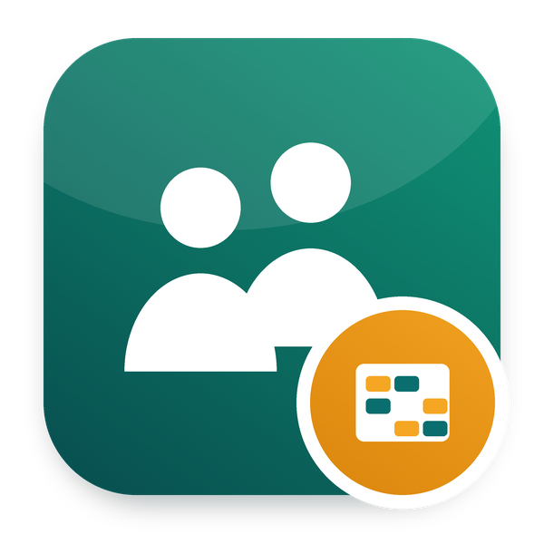

The shared base of the Odoo Mates HR modules: the My HR menu and the employee category
Part of Odoo 20 HRMS - Odoo Mates · Odoo 20 Community and Enterprise
Each Odoo Mates HR module adds what employees do for themselves there
Set on the contract, from the Employee Types of the Employees configuration
Records moved here from another module keep their database id
Works with Odoo 20 Community and Odoo 20 Enterprise.
hr.
Odoo Mates HR
The HR suite of Odoo Mates for Odoo 20: every module installs on its own, the links between them are bridges.
Support: odoomates@gmail.com